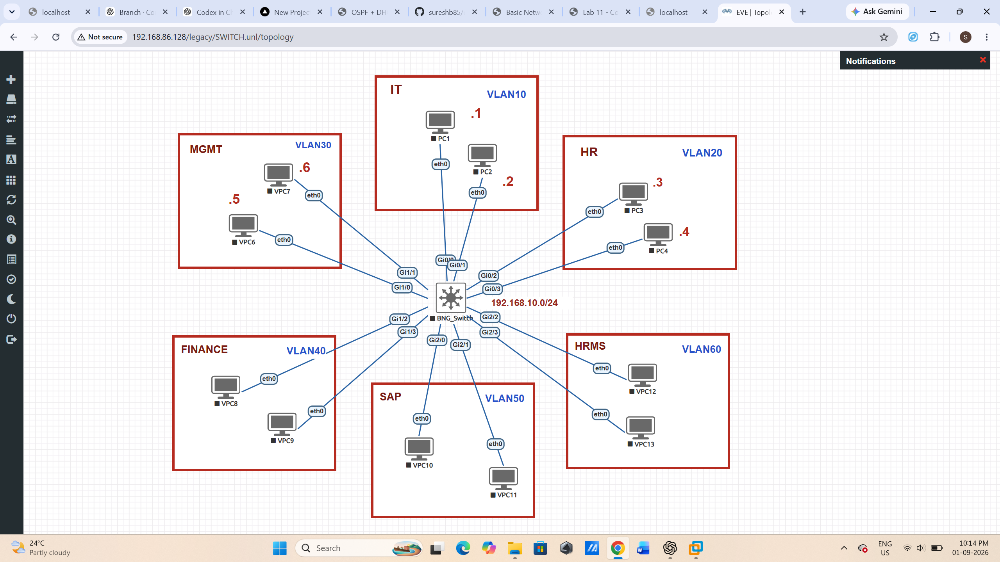

Lab 02 - VLAN Configuration
Objective
Create VLANs and assign switch ports to the appropriate VLAN.
Topology
PC1 ---- SW1 PC2 ---- SW1 PC3 ---- SW1 PC4 ---- SW1 VLAN 10 - USERS VLAN 20 - SERVERS

Create VLANs
enable configure terminal vlan 10 name USERS vlan 20 name SERVERS
Assign Access Ports
interface g0/1 switchport mode access switchport access vlan 10 interface g0/2 switchport mode access switchport access vlan 10 interface g0/3 switchport mode access switchport access vlan 20 interface g0/4 switchport mode access switchport access vlan 20 end
Verification
show vlan brief show interfaces status
Expected Result
Ports connected to PC1 and PC2 should appear in VLAN 10. Ports connected to PC3 and PC4 should appear in VLAN 20.
Important Concept
A VLAN creates a separate Layer 2 broadcast domain. Devices in different VLANs cannot communicate directly at Layer 2. A Layer 3 device is required for communication between VLANs.
← All labs